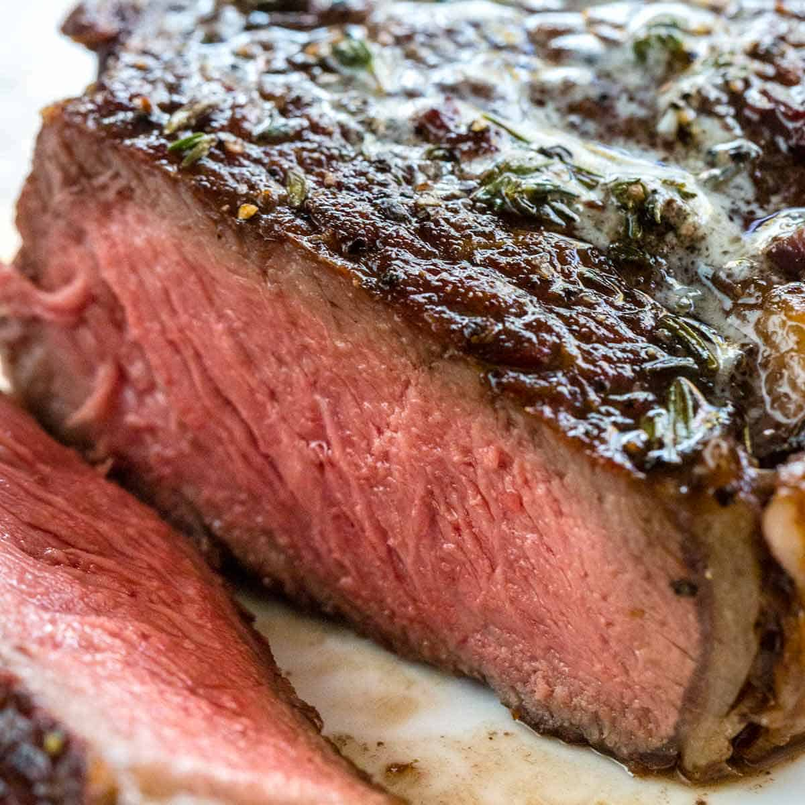

Reverse Seared Steak

Ingredients
- Big Ol' Steaks
- Steak Seasoning
- Butta
Directions
- Season both side of steak & set in fridge for a coupla hours
- Cook in oven for 1 hour at two hunned degrees
- Heat up some butta in a thickbottom pan
- Sear steak in pan, 1 minute for each side
- Slice and gorge yourself
Home